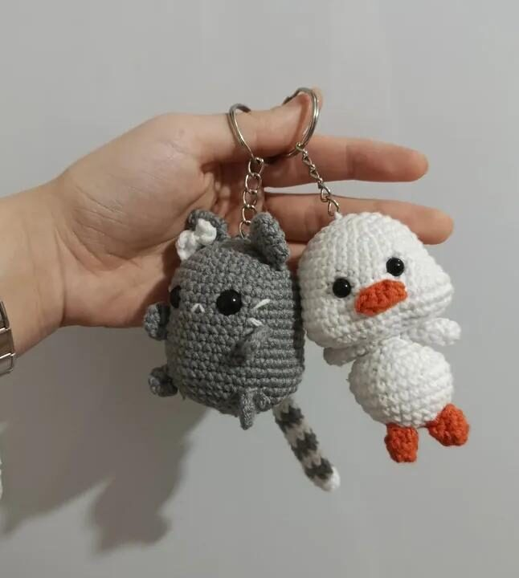

Anahtarlık
İkili Amigurumi Anahtarlık
₺180
Gri kedi ve beyaz ördekten oluşan bu ikili, çantanıza ya da anahtarınıza küçük bir neşe katar. Her biri pamuk iplikle, tek tek elde örülür; ikisi de paylaşılmak için yapıldı: biri size, biri sevdiğinize.
- Malzeme
- %100 pamuk amigurumi ipliği
- Boyut
- Her biri yaklaşık 8 cm
- Dolgu
- Antialerjik elyaf
- Gözler
- Güvenlikli plastik göz
- Bakım
- Elde, soğuk suyla yıkayın; sıkmadan kurutun
Bu bir tasarım örneğidir, satış yapılmamaktadır.
Tüm Ürünlere DönBunlar da hoşunuza gidebilir